前言
在老夫还在搞服务器端时候，老夫觉得能读能改js代码就差不多了吧；
当老夫刚刚踏入前端会想js能设置断点该多好呢？
当老夫手拥firebug、google、ie浏览器开发插件（叫不出名字...）时，老夫是多么的高兴啊！！！
但是有些项目就会让你不自主的感觉痛苦，因为改动非常痛苦！！！
比如我对项目做了一点修改，但是我没办法在正式环境测试；换个方式，若是qq首页哪里出了js错误，要马上定位、马上解决该怎么办呢？
前端杀器Fiddler
其实老夫也是最近才开始使用该软件的，其实老夫很多不懂，但是我就用其中一点东西就好了，只一眼便已爱如心扉！！！
先来个截图：
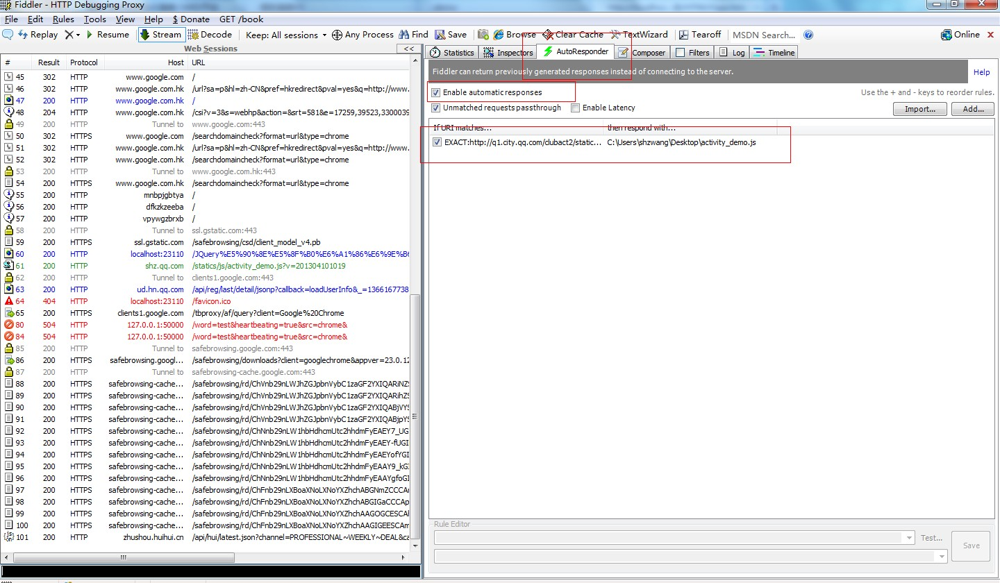
请注意矩形框位置，我就会用这个。。。。
大杀器在线编辑js/html/css
光说不练假把式！下面就让老夫试试这个大杀器~！
打开我们的博客园首页看看，然后观察我们的大杀器变化：
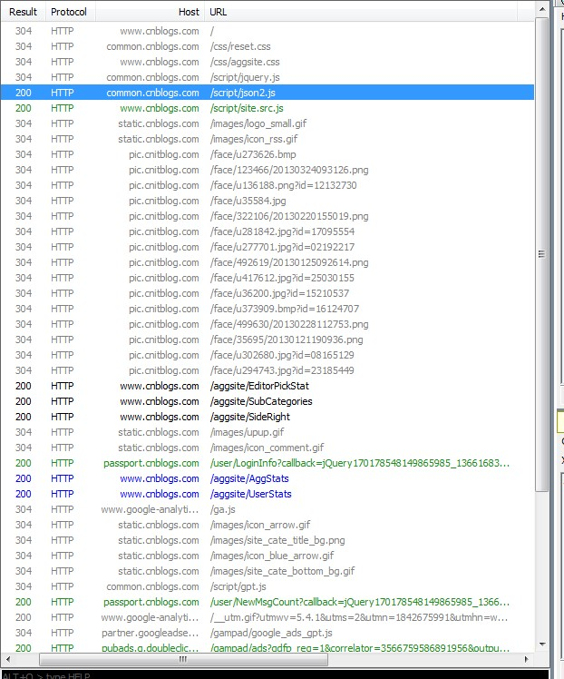
小样东西还不少呢！！！现在让我们来动点手脚了！！！
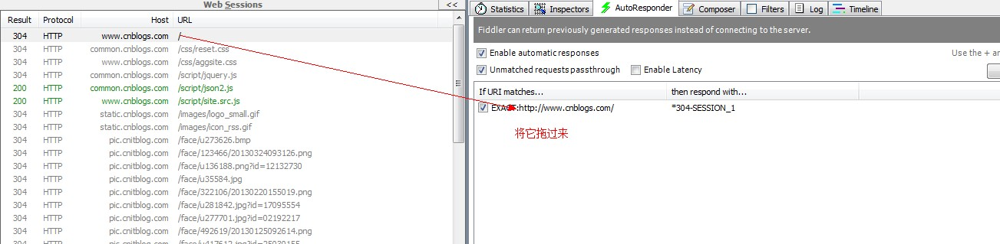
右键编辑之，出现：
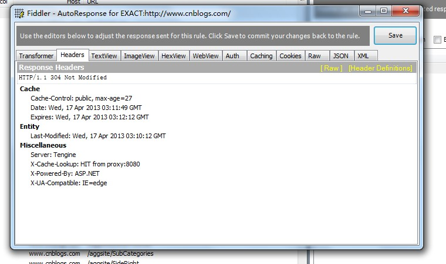
算了，我想了下，还是不用博客园来测试了，用它估计老夫要丢人。。。因为首页可能用了页面片神马的，老夫没找到。。。
于是老夫又进了自己博客文章的页面，来看看有什么东东呢？
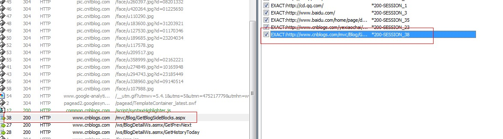
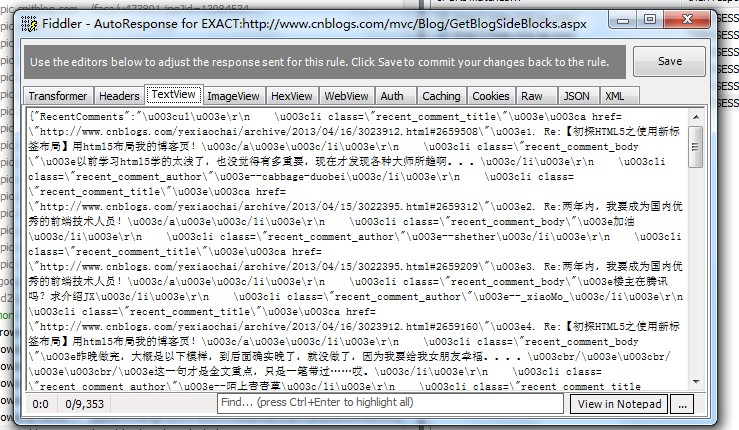
日本人，是拉的json数据啦！！！说实话ajax真是讨厌了，老夫又丢脸了，算了继续！！！
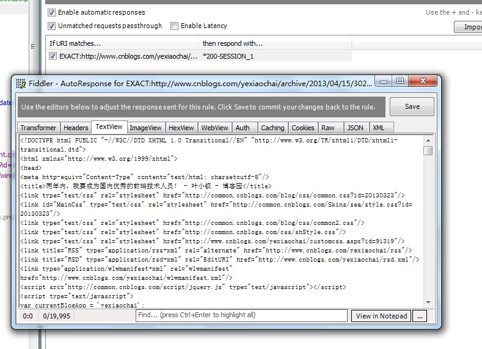
最后老夫找到了自己想要的东东，于是乎我随便加点文字，加点js后！！！
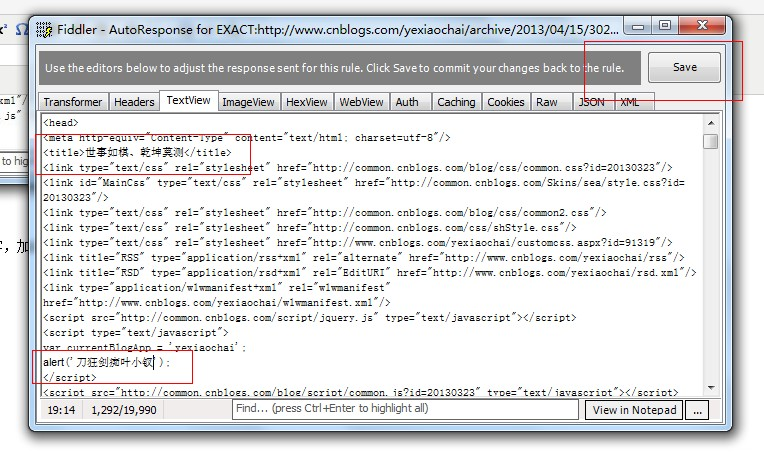
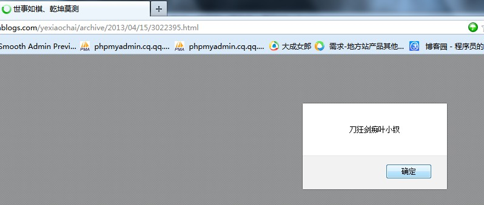
做这点变化保存后，刷新页面，非常奇迹的变了，我们用本地的文件替换了线上的请求！！！
这个东西是不得了的，我们根据这个特性完全可以做在线前端测试！！！
对js的操作
对js的操作，我们换个地方，熟悉点的东西好操作一点，以免再出丑，我们来看大成网的首页：
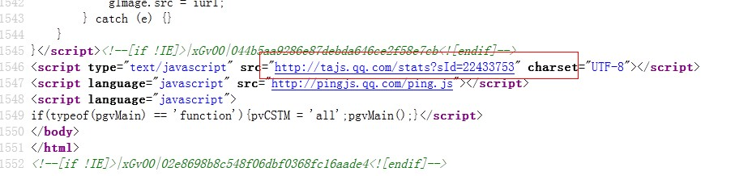
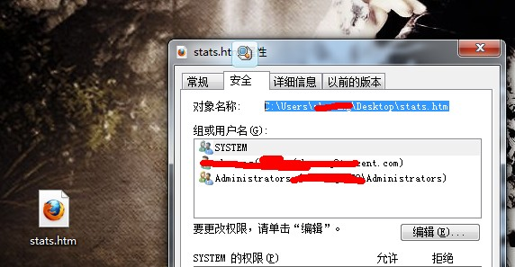
我们将之存到桌面，晚上讲地址赋给fiddler：
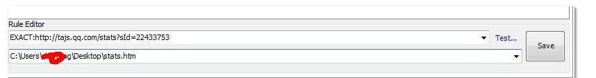
这样一保存，我们在本地的修改就直接同步到线上页面啦！！！！对小的来说，当真神器！！！
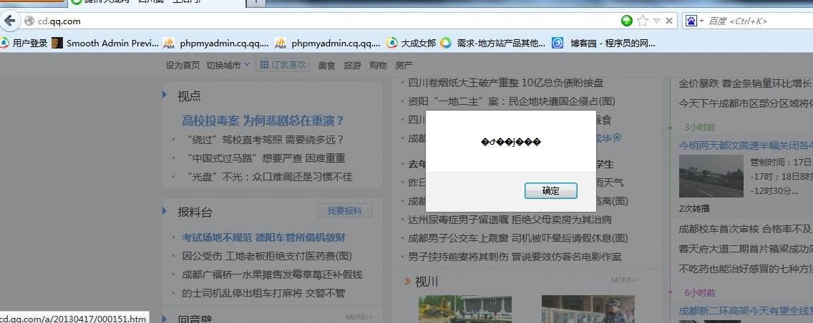
于是你可以说你在大成网自豪的弹了个框出来。。。。
结语
其实小的对Fiddler也不太熟，就只会这点点花招，并且还感觉不差呢！！！
它的出现主要有什么好处呢，好处就是我们可以在线测试前端的代码，修复前端的BUG，然后将修改后的文件上传即可；
这也许没什么意义，但当项目到一定规模，发布有一定门槛后，就变得非常有意义了！！！